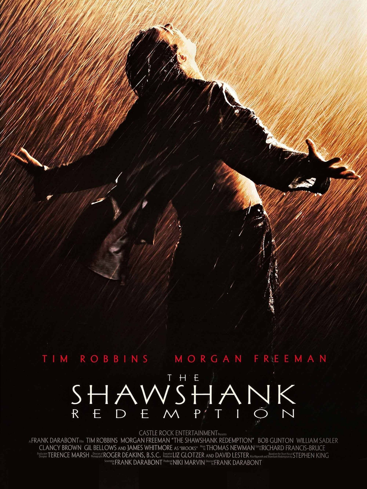
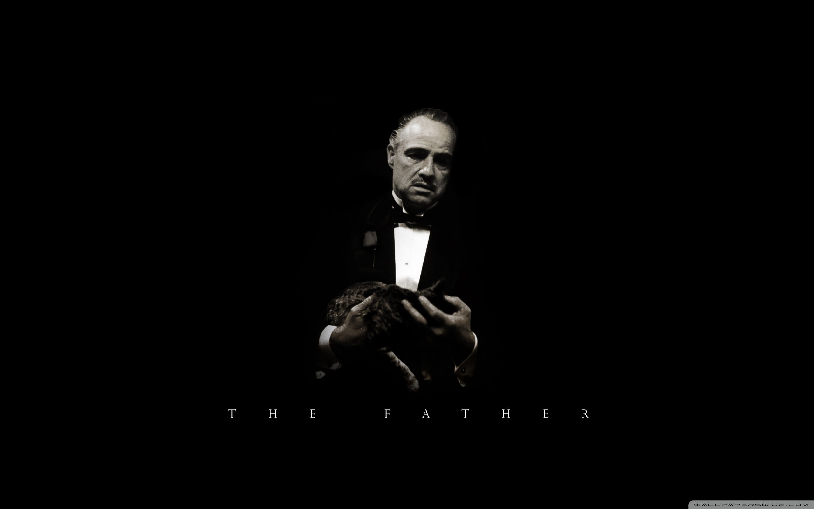
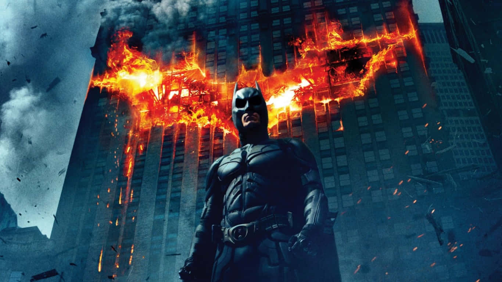

| Movie Title |
|---|
| The Shawshank Redemption |
| The Godfather |
| The Dark Knight |
The Shawshank Redemption: This film tells the story of Andy Dufresne, a banker who is sentenced to life in Shawshank State Penitentiary for the murder of his wife and her lover. The movie is renowned for its themes of hope and perseverance, making it a timeless classic. 
The Godfather: A gripping tale of the powerful Italian-American crime family of Don Vito Corleone, this movie is a masterclass in storytelling, depicting the complexities of family, loyalty, and power. It's widely considered one of the greatest films in cinema history. 
The Dark Knight: In this critically acclaimed sequel, Batman faces off against the Joker, who seeks to plunge Gotham City into chaos. This film is praised for its compelling narrative and Heath Ledger's iconic performance as the Joker, redefining the superhero genre. 
"The greatest films are the ones that connect us." - Anonymous